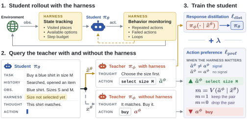

Harness-Aware Distillation for Small Language Model Agents
1KAIST AI 2Independent researcher
†Co-corresponding authors
Agents are deployed inside a harness, the software that manages the model's context, tools, and feedback. When an agent is distilled into a smaller one, the harness stays in place, so the student mainly needs what the teacher adds beyond the harness. HAD teaches exactly that, by contrasting the same teacher's actions with and without the harness information.
What should distillation transfer?
HARNESS
state tracking · behavior monitoring
TEACHER
the ability to act on
what the harness reports
standard OPD imitates
the mixed output
HAD distills only
what the teacher adds
HARNESS
the same one — already in place
STUDENT
only needs the part
the harness cannot provide
The deployed agent is the teacher inside a harness, and the harness ships with the student unchanged, so the only thing worth transferring is what the teacher adds on top of it. HAD obtains that part without ever observing it separately: it queries the same teacher with and without the harness information, and the contrast between the two answers is exactly the teacher's own contribution.
Abstract
Language model agents are deployed with a harness, the software around the model that manages its context, tools, and feedback. When such an agent is distilled into a smaller one, the harness stays in place, so the student mainly needs the teacher-specific abilities that the harness cannot provide, such as acting correctly on harness information. Standard distillation, however, imitates the teacher's full outputs and treats the harness as part of the input. We propose Harness-Aware Distillation (HAD), which focuses distillation on what the teacher adds beyond the harness. HAD complements on-policy distillation with two components: an action preference that contrasts the same teacher's actions with and without the harness information, scored after the student's own reasoning, and a validity check that drops preference pairs whose preferred action contradicts the harness records. We show that the contrast gives the student information that imitating the teacher alone cannot provide, and HAD needs no task rewards, success labels, or future information. Across multiple long-horizon agent benchmarks and models, HAD outperforms on-policy distillation baselines with the same harness, and on one benchmark its student even surpasses the larger teacher. Our analysis shows that HAD enters fewer unproductive loops and recovers from errors more often than the baselines, and suggests that it adaptively keeps learnable feedback in its weights while reading state information from the harness.
Three ways on-policy distillation misses the harness
On a task that asks the agent to clean a plate and put it in the cabinet:
1. Ignores the harness
HARNESSplate not clean
“I have the plate. Put it in the cabinet.”
“The plate is not clean.”
2. Right goal, wrong action
HARNESSplate not clean
“Let’s clean the plate” — then walks away from the sink.
“The sink is where I can wash it.”
3. Copies teacher errors
HARNESSholding nothing
the target needs a plate the agent does not hold
copied as-is
dropped from the preference term
Method

Δt compares the student's likelihood of the two teacher actions, both scored after the student's own reasoning, and the mask mt drops pairs whose preferred action contradicts the harness records. The preference term gives a signal only at states where the two teacher actions differ, and HAD uses no task rewards, success labels, or future information.
When does the harness matter?
HAD queries the same teacher twice at every state the student visits. Pick a case:
Teacher with the harness
Teacher without the harness
Results
Success rate on unseen ALFWorld tasks, with the harness. The HAD student surpasses its 8B teacher.
Full results. All distillation methods are trained with the harness.
| ALFWorld (1.7B ← 8B) | WebShop (0.6B ← 30B) | ScienceWorld (0.6B ← 30B) | ||||
|---|---|---|---|---|---|---|
| Method | Unseen SR | Seen SR | Score | SR | Score | SR |
Teacher and student are evaluated zero-shot. Bold marks the best student in each column.
What the student learns
Fewer loops, more recovery
ALFWorld episodes without stalls or repeated failed actions (prevention), and stalls escaped (recovery).
Which parts of the harness it relies on
Unseen success rate of HAD when one harness category is hidden at evaluation.
State information still comes from the harness; much of the behavior feedback is in the weights.
A loop, and the way out
An unseen ALFWorld task asks the agent to put a hot cup in cabinet, and heat X with Y heats only the object in hand. Every student first puts the cup in the microwave and then tries to heat it with an empty hand.
Baselines — reach the step limit
Nothing happens.
OPD and SOPD repeat the same no-effect action until the episode ends; SAGE-OPD wanders to the stoveburner and the toaster; Guided-OPD keeps taking the cup from a cabinet where it no longer is.
HAD — succeeds at turn 25
HARNESS No new observation in 5 steps. Progress has stopped.
HARNESS You are holding cup 2.
HAD also falls into the loop. The difference is that it leaves: after the stall report it takes the cup back, and once the harness shows that it holds the cup, it heats it.
BibTeX
@article{choi2026had,
title = {Harness-Aware Distillation for Small Language Model Agents},
author = {Choi, Moonseok and Moon, Taehong and Nam, Giung and Lee, Juho},
journal = {arXiv preprint arXiv:XXXX.XXXXX},
year = {2026}
}